A SwiftUI walkthrough
I deleted 3,000 lines of my working macOS app to make it teachable. What's left — about 1,000 lines — is the part worth learning from, and this is how you'd build it.
kindaVim is a macOS accessibility tool that gives you Vim motions in any text field — Mail, Slack, Notes, Xcode, anywhere. Transformative if you know Vim. A brick wall if you don't. This tutorial builds the companion: a tutor app that teaches those motions through short, repeatable drills.
The finished app is about a thousand lines of Swift. That smallness is the point. Every decision has visible consequences; every new concept earns its place by solving a problem you just hit. The format follows Apple's Landmarks tutorial: each chapter is a feature, not a concept. Concepts appear in small callouts the moment they're needed.
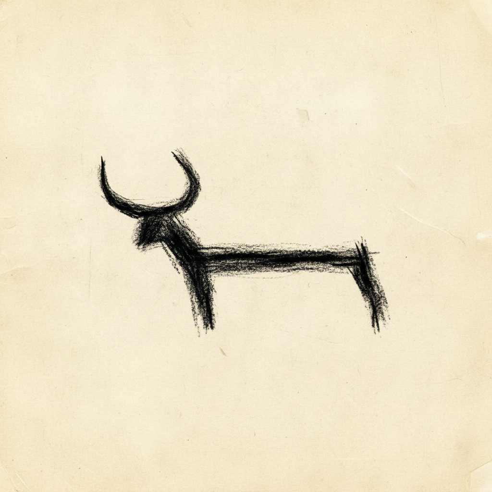
Chapter one
The finished product running, and the shape of the journey ahead.
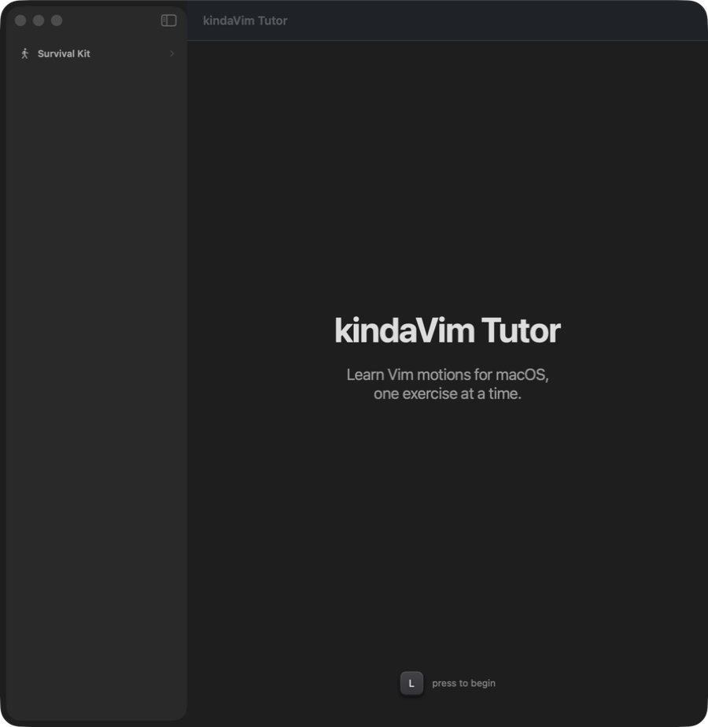
The app is a single window with two panes. A list of lessons on the left; whichever lesson is selected on the right, shown as a sequence of slides. Navigation uses the motion keys themselves — l forward, h back — so your fingers are practicing from the moment you open it.
Some slides explain the motion. Others are drills: a tiny editor seeded with a sentence, an instruction ("delete the word bad"), and an expected result. You type. The app validates every keystroke. When your text and cursor match, the drill advances. Five reps in, the sidebar shows a checkmark and the work is written to disk.
This tutorial assumes you're comfortable reading Swift — structs, closures, optionals, enums with associated values. If those feel fluent, you're ready; if not, the Swift book is a good afternoon.
Where we are
Nothing yet. Next chapter we start with the data.
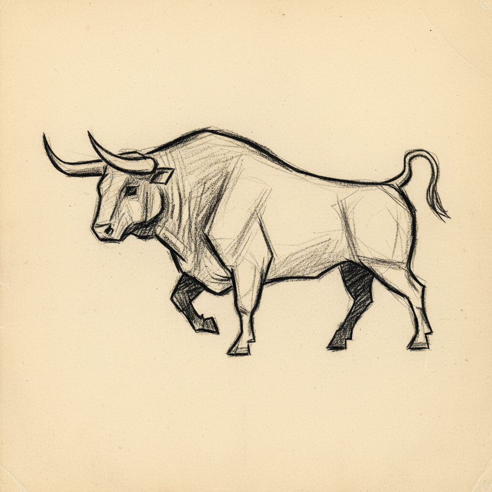
Chapter two
Plain Swift types for Chapter, Lesson, Exercise, and ContentBlock — the shape of everything the app teaches.
"Modeled the data first" is on every experienced SwiftUI developer's list of things they wish they'd done sooner. The temptation is to start with the screen you can picture. It works for five minutes. Then three views each half-understand the data, and changing anything means changing all three.
What does the app talk about? A Chapter (a theme like "Survival Kit") contains Lessons. Each Lesson has explanation and zero or more Exercises. An exercise is "transform this starting text into this expected text." Four types, one file each.
struct Lesson: Identifiable, Hashable, Sendable {
let id: String
let number: Int
let title: String
let subtitle: String
let explanation: [ContentBlock]
let exercises: [Exercise]
let motionsIntroduced: [String]
}Sources/KindaVimTutorKit/Models/Lesson.swift
Three conformances earn their place. Identifiable lets SwiftUI's List and ForEach track rows across refreshes. Hashable makes Lesson usable as a NavigationSplitView selection. Sendable is the Swift 6 "safe across threads" stamp — free on value types with value-type properties. Stick to structs and enums and the compiler will shrug and let you work.
The Exercise struct carries the whole validation rule:
struct Exercise: Identifiable, Equatable, Sendable {
let id: String
let instruction: String
let initialText: String
let initialCursorPosition: Int
let expectedText: String
let expectedCursorPosition: Int?
let hints: [String]
let drillCount: Int
let variations: [Variation]
// ...
}A rep of a drill is done when current text equalsexpectedTextand current cursor equalsexpectedCursorPosition. That's the whole rule. The engine will run it on every keystroke.
Variations exist so the user practices the motion, not the specific input — one Exercise ships several starting/expected pairs, and the engine rotates through them across reps.
Last piece: lesson explanations are a closed set of block kinds, expressed as an enum.
enum ContentBlock: Sendable {
case heading(String)
case text(String)
case tip(String)
case keyCommand(keys: [String], description: String)
case codeExample(before: String, after: String, motion: String)
// ...
}The whole curriculum is a static Swift constant — Curriculum.chapters is typed, grep-able, refactorable. No server, no JSON, no CMS.
Where we are
Data compiles. Nothing visible yet. You could already write a test that walks every exercise and checks no expectedText is empty — in fact, one exists in the project.
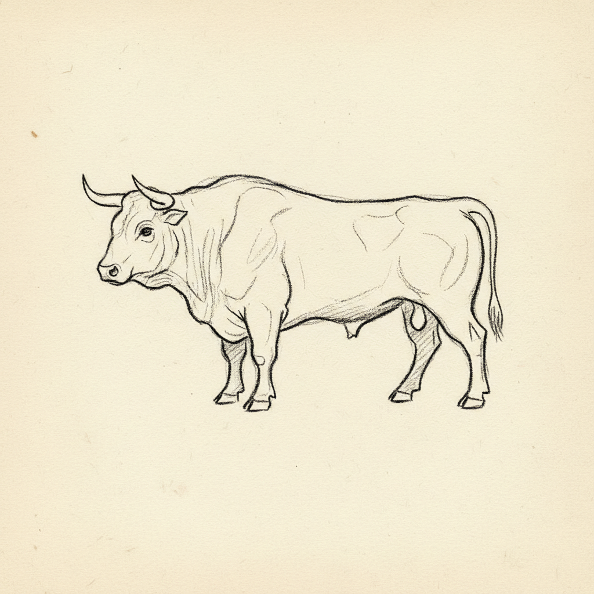
Chapter three
A single rendered lesson — chapter label, title, subtitle, motion row — all driven off the data from chapter two and visible in Xcode's live preview.
Let's render something. Forget navigation for now, forget drills; just take a Lesson and put its header on screen. This is where SwiftUI starts to feel fast — you write a view, the preview shows it, you tweak, the preview redraws.
struct LessonHeaderView: View {
let lesson: Lesson
let chapterTitle: String
var body: some View {
VStack(alignment: .leading, spacing: 10) {
Text(chapterTitle.uppercased())
.font(.system(size: 13, weight: .semibold))
.foregroundStyle(.tint)
.tracking(1.2)
Text(lesson.title)
.font(.system(size: 32, weight: .bold))
.tracking(-0.5)
Text(lesson.subtitle)
.font(.system(size: 17))
.foregroundStyle(.secondary)
if !lesson.motionsIntroduced.isEmpty {
Text(lesson.motionsIntroduced.joined(separator: " "))
.font(.system(size: 17, weight: .medium, design: .monospaced))
.foregroundStyle(.secondary)
.padding(.top, 4)
}
}
.frame(maxWidth: .infinity, alignment: .leading)
}
}Sources/KindaVimTutorKit/Views/Lesson/LessonHeaderView.swift
A vertical stack with four lines. Chapter label, lesson title, subtitle, and a monospaced row of any new motions the lesson introduces.
Add a #Preview block at the bottom of the file and Xcode renders it live in the canvas. Change a font size; see it update. This is the feedback loop for the rest of the tutorial — use it aggressively.
#Preview {
LessonHeaderView(
lesson: PreviewSamples.lesson,
chapterTitle: "Survival Kit"
)
.padding()
.frame(width: 640)
}The header is easy because every lesson has the same shape. The explanation is harder — its content varies per block. This is where Swift's enums-with-associated-values pay off: one switch exhaustively renders every case.
struct ContentStepView: View {
let blocks: [ContentBlock]
var body: some View {
VStack(alignment: .leading, spacing: 20) {
ForEach(Array(blocks.enumerated()), id: \.offset) { _, block in
contentBlockView(block)
}
}
}
@ViewBuilder
private func contentBlockView(_ block: ContentBlock) -> some View {
switch block {
case .heading(let text):
Text(text).font(.system(size: 28, weight: .bold))
case .text(let text):
Text(text).font(.system(size: 16)).lineSpacing(6)
case .tip(let text):
calloutRow(icon: "lightbulb", text: text,
background: AppColors.tipBackground)
case .keyCommand(let keys, let description):
HStack(alignment: .top, spacing: 16) {
Text(keys.joined(separator: " "))
.font(.system(size: 18, weight: .medium, design: .monospaced))
Text(description)
.foregroundStyle(.secondary)
}
// ... other cases
}
}
}Where we are
Two views that can render any Lesson fed to them. The preview canvas shows it live. Still no way to pick a lesson, still no state — just descriptions of data.
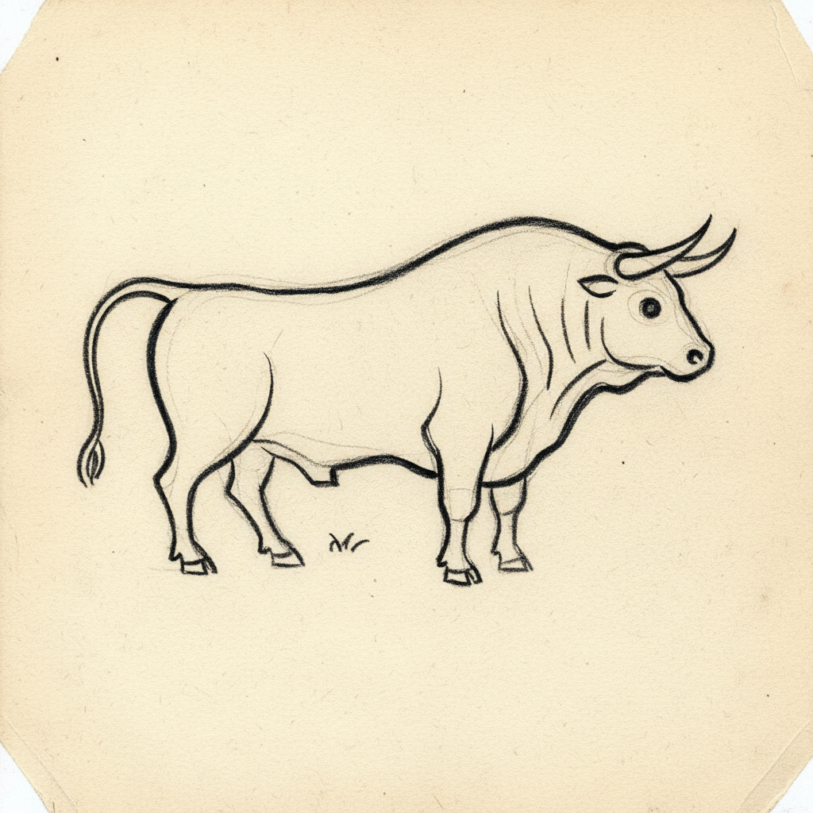
Chapter four
The left-hand sidebar that lists every lesson in every chapter, with completion checkmarks. Think Xcode's file navigator, but simpler.
SwiftUI's List with .listStyle(.sidebar) is the native macOS sidebar. Correct padding, background, collapse behavior — all for free.
struct SidebarView: View {
let chapters: [Chapter]
@Binding var selectedLessonId: String?
let progressStore: ProgressStore
@State private var expandedChapterId: String?
var body: some View {
List(selection: $selectedLessonId) {
ForEach(chapters) { chapter in
let isExpanded = expandedChapterId == chapter.id
Button {
withAnimation(.easeInOut(duration: 0.2)) {
expandedChapterId = isExpanded ? nil : chapter.id
}
} label: {
HStack(spacing: 8) {
Image(systemName: chapter.systemImage)
Text(chapter.title).fontWeight(.semibold)
Spacer()
Image(systemName: "chevron.right")
.rotationEffect(.degrees(isExpanded ? 90 : 0))
}
}
.buttonStyle(.plain)
if isExpanded {
ForEach(chapter.lessons) { lesson in
LessonRowView(
lesson: lesson,
chapterNumber: chapter.number,
isCompleted: progressStore.isLessonCompleted(lesson)
)
.tag(lesson.id)
}
}
}
}
.listStyle(.sidebar)
.frame(minWidth: 200)
}
}Sources/KindaVimTutorKit/Views/Navigation/SidebarView.swift
The $ prefix — as in List(selection: $selectedLessonId) — is how you get the binding for a state-ish property. Bare name reads the value; $name reads the read-write handle. Each lesson row's .tag(lesson.id) supplies what gets written when the user clicks.
Chapters are toggleable but not selectable — the chapter row is a Button that flips expandedChapterId, and lessons only render when the chapter is expanded.
The row itself is tiny — a title, and a checkmark if the lesson is complete:
struct LessonRowView: View {
let lesson: Lesson
let chapterNumber: Int
var isCompleted: Bool = false
var body: some View {
HStack(spacing: 6) {
Text(lesson.title)
.foregroundStyle(isCompleted ? .secondary : .primary)
Spacer()
if isCompleted {
Image(systemName: "checkmark")
.foregroundStyle(.tertiary)
}
}
.padding(.vertical, 2)
}
}progressStore.isLessonCompleted(lesson) doesn't exist yet. That's fine — the sidebar can call it as if it does. When we build ProgressStore in chapter nine, the row will light up on its own.
Where we are
The sidebar renders, the chapters expand and collapse, clicking a row mutates selectedLessonId… but we haven't wired that variable up to anything yet. That's the next chapter.
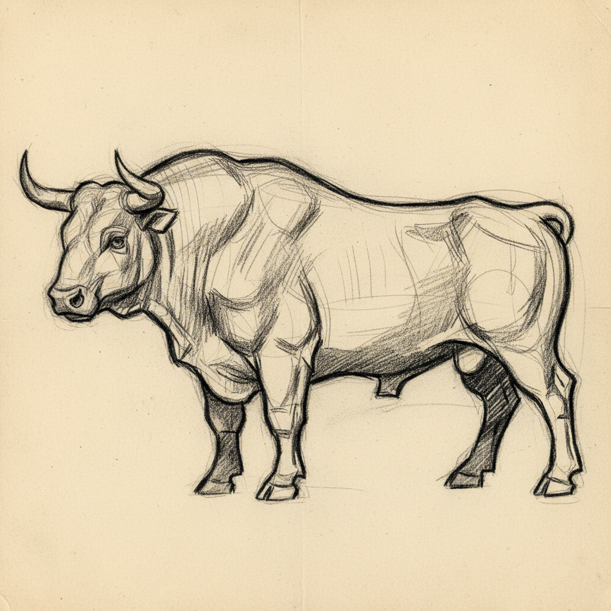
Chapter five
A two-pane split view wired to a single observable object that owns the app's state.
A macOS two-pane app uses NavigationSplitView. Give it a closure for the sidebar and one for the detail pane; macOS handles the divider, column sizing, and the collapse-the-sidebar behavior. A first cut:
@main
struct KindaVimTutorApp: App {
@State private var selectedLessonId: String?
var body: some Scene {
Window("kindaVim Tutor", id: "main") {
NavigationSplitView {
SidebarView(
chapters: Curriculum.chapters,
selectedLessonId: $selectedLessonId,
progressStore: ProgressStore() // placeholder
)
} detail: {
if let lesson = Curriculum.chapters
.flatMap(\.lessons)
.first(where: { $0.id == selectedLessonId }) {
LessonHeaderView(lesson: lesson, chapterTitle: "TBD")
} else {
Text("Pick a lesson.")
}
}
}
}
}This runs. Click a row, the right pane updates. You didn't write any wiring — the flow is inferred from who reads and who writes each value.
But the snippet has two problems that are really the same problem. @main's body is computing .flatMap(\.lessons).first(where:) — that's business logic in a view. And it's instantiating ProgressStore() inline, which risks a fresh instance every time body runs. Both facts belong to the app, not to any view.
One object owns the selection and the progress store. The two panes read what they need from it, and the sidebar writes the selected lesson back through a binding. The data flow is a triangle:
Both panes get only the slice they need. When the sidebar writes, the canvas re-renders automatically because its body reads selectedLesson, and Observation knows to subscribe it.
Here's the class:
@Observable
@MainActor
public final class AppState {
public var selectedLessonId: String?
public let progressStore = ProgressStore()
public let chapters: [Chapter] = Curriculum.chapters
private var allLessons: [Lesson] { chapters.flatMap(\.lessons) }
public var selectedLesson: Lesson? {
guard let id = selectedLessonId else { return nil }
return allLessons.first { $0.id == id }
}
public var selectedChapter: Chapter? {
guard let lesson = selectedLesson else { return nil }
return chapters.first { $0.lessons.contains(lesson) }
}
public init() {}
public func goToFirstLesson() {
selectedLessonId = allLessons.first?.id
}
}Sources/KindaVimTutorKit/App/AppState.swift — elided for brevity.
Two annotations carry the weight.
The final @main is almost a one-liner:
@main
struct KindaVimTutorApp: App {
@State private var appState = AppState()
var body: some Scene {
Window("kindaVim Tutor", id: "main") {
NavigationSplitView {
SidebarView(
chapters: appState.chapters,
selectedLessonId: $appState.selectedLessonId,
progressStore: appState.progressStore
)
} detail: {
if let lesson = appState.selectedLesson,
let chapter = appState.selectedChapter {
LessonHeaderView(lesson: lesson, chapterTitle: chapter.title)
} else {
WelcomeView(onStartLearning: { appState.goToFirstLesson() })
}
}
.frame(minWidth: 900, minHeight: 600)
}
}
}@State private var appState = AppState() holds a class instance the same way it would hold a struct. Its job is "keep this alive across body invocations and notify me when it changes."
Where we are
Two panes, one observable source of truth. The root scene is short. Every downstream view gets just the slice of state it needs — nothing more.
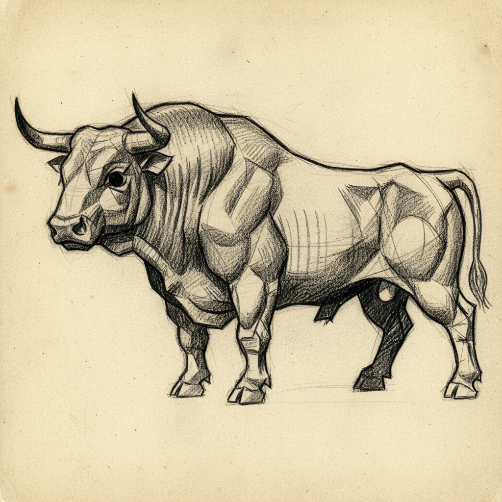
Chapter six
A slide-based presentation of a lesson — title, content pages, drills — navigable with l and h.
The first prototype had a scrolling page: read the text, scroll down, do the drill. It worked, and it didn't feel like Vim. Vim is modal and step-at-a-time, so the tutor should be too. Slides, advanced with the motion keys the user is learning.
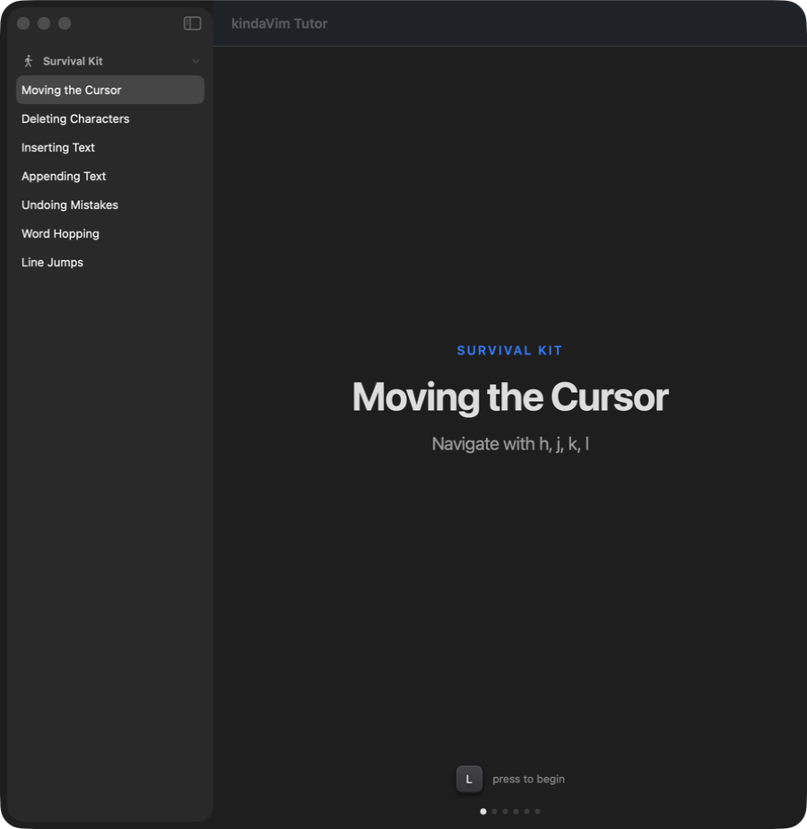
A Lesson is an unordered bag of content. We turn it into an ordered sequence of steps — each a title slide, a chunk of explanation, or a drill:
enum LessonStep: Identifiable {
case title(lesson: Lesson, chapterTitle: String)
case content(id: String, blocks: [ContentBlock])
case drill(exercise: Exercise, exerciseNumber: Int)
var id: String {
switch self {
case .title(let lesson, _): "title-\(lesson.id)"
case .content(let id, _): "content-\(id)"
case .drill(let exercise, _): "drill-\(exercise.id)"
}
}
}A small static function expands a Lesson into steps. Headings divide the explanation into groups — one content step per heading-delimited chunk. Drills come at the end:
extension LessonStep {
static func steps(from lesson: Lesson, chapterTitle: String) -> [LessonStep] {
var result: [LessonStep] = [.title(lesson: lesson, chapterTitle: chapterTitle)]
var currentGroup: [ContentBlock] = []
var groupIndex = 0
for block in lesson.explanation {
if case .heading = block, !currentGroup.isEmpty {
result.append(.content(id: "\(lesson.id).c\(groupIndex)",
blocks: currentGroup))
currentGroup = []
groupIndex += 1
}
if case .spacer = block { continue }
currentGroup.append(block)
}
if !currentGroup.isEmpty {
result.append(.content(id: "\(lesson.id).c\(groupIndex)",
blocks: currentGroup))
}
for (i, ex) in lesson.exercises.enumerated() {
result.append(.drill(exercise: ex, exerciseNumber: i + 1))
}
return result
}
}This function is pure data in, data out — no SwiftUI, trivially testable, and the project tests it.
Which step are we on, how do we advance? Another small @Observable class. It knows nothing about views.
@Observable
@MainActor
final class LessonStepController {
private(set) var steps: [LessonStep] = []
var currentStepIndex: Int = 0
var navigationDirection: NavigationDirection = .forward
enum NavigationDirection { case forward, backward }
var currentStep: LessonStep? {
guard currentStepIndex >= 0, currentStepIndex < steps.count else { return nil }
return steps[currentStepIndex]
}
var isFirstStep: Bool { currentStepIndex == 0 }
var isLastStep: Bool { currentStepIndex >= steps.count - 1 }
func loadLesson(_ lesson: Lesson, chapterTitle: String) {
steps = LessonStep.steps(from: lesson, chapterTitle: chapterTitle)
currentStepIndex = 0
}
func nextStep() {
guard !isLastStep else { return }
navigationDirection = .forward
withAnimation(.easeInOut(duration: 0.3)) { currentStepIndex += 1 }
}
func previousStep() {
guard !isFirstStep else { return }
navigationDirection = .backward
withAnimation(.easeInOut(duration: 0.3)) { currentStepIndex -= 1 }
}
}And the view that hosts all this — the canvas — renders the current step and listens for keypresses:
struct StepCanvasView: View {
let lesson: Lesson
let chapterTitle: String
let progressStore: ProgressStore
@State private var controller = LessonStepController()
@State private var isEditorFocused = false
var body: some View {
ZStack {
if let step = controller.currentStep {
Group {
switch step {
case .title(let l, let c):
TitleStepView(lesson: l, chapterTitle: c)
case .content(_, let blocks):
ContentStepView(blocks: blocks)
case .drill(let ex, let n):
DrillStepView(
exercise: ex,
exerciseNumber: n,
progressStore: progressStore,
isEditorFocused: $isEditorFocused
)
}
}
.id(step.id)
.transition(slideTransition)
}
}
.focusable()
.onAppear { controller.loadLesson(lesson, chapterTitle: chapterTitle) }
.onKeyPress { keyPress in handleKey(keyPress) }
}
}A thoughtful touch inside handleKey: when the user is focused inside the drill editor, l and h are motions they're trying to perform, not nav commands. The canvas only consumes those keys when the editor isn't focused. Details like this are the difference between a tutor that feels right and one you fight.
Where we are
A working lesson flow. Pick a lesson, press l to advance, press h to go back. Title, content, and (stub) drill slides in sequence. The drill itself doesn't do anything yet — but the scaffolding's ready.
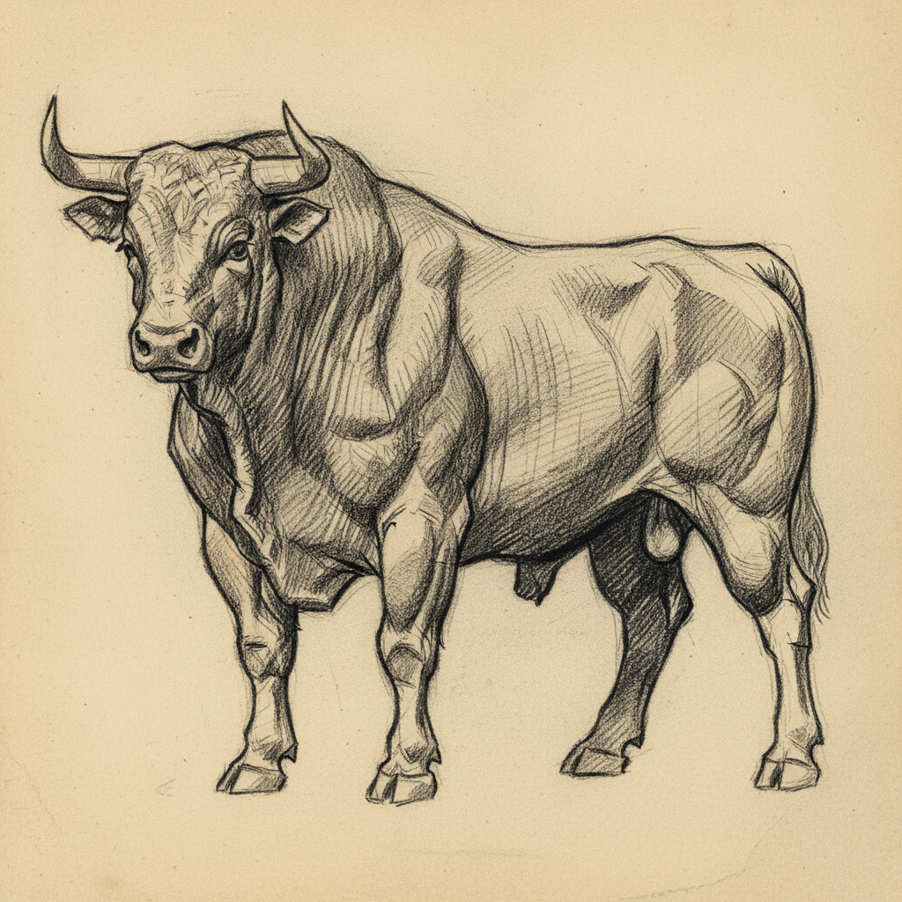
Chapter seven
ExerciseEngine, a self-contained state machine for one drill: validate on every keystroke, rotate variations, transition to completion.
Before the engine, the temptation. You'd start by dropping the logic straight into DrillStepView, because why not — it's all happening right there:
struct DrillStepView: View {
let exercise: Exercise
@State private var currentText = ""
@State private var currentCursor = 0
@State private var keystrokes = 0
@State private var completedReps = 0
@State private var startTime = Date()
var body: some View {
ExerciseEditorView(/* ... */)
.onChange(of: currentText) {
keystrokes += 1
if currentText == exercise.expectedText,
currentCursor == exercise.expectedCursorPosition {
completedReps += 1
if completedReps >= exercise.drillCount {
// save progress here? or somewhere else?
} else {
// reset for next rep, rotate variation...
}
}
}
}
}It works. Then you add timing, then rotating variations, then a "reset the current rep" button, then a guard against onChange firing after the view disappeared. Each requirement jams another branch into the same closure. The validation rule now lives in three ifs across two files. You can't test any of it without spinning up a view. You end up with a drill component you're afraid to touch.
Pull the logic into its own type. It has a lifecycle, four states, and a handful of transitions — that's the whole machine:
@Observable
@MainActor
final class ExerciseEngine {
enum State: Equatable {
case idle
case active
case repCompleted
case drillCompleted
}
private(set) var state: State = .idle
private(set) var exercise: Exercise?
private(set) var keystrokeCount: Int = 0
private(set) var elapsedTime: TimeInterval = 0
private(set) var completedReps: Int = 0
private(set) var drillCount: Int = 5
private(set) var totalTime: TimeInterval = 0
private(set) var totalKeystrokes: Int = 0
private(set) var currentVariation: Exercise.Variation?
private var startTime: Date?
private var timer: Timer?
}Four cases: idle, active while a rep is in progress, repCompleted for a brief settled moment, drillCompleted at the end. All mutation goes through a few small methods.
extension ExerciseEngine {
func start(_ exercise: Exercise) {
self.exercise = exercise
self.drillCount = exercise.drillCount
completedReps = 0
totalTime = 0
totalKeystrokes = 0
startRep(exercise.variation(for: 0))
}
func textDidChange(currentText: String, cursorPosition: Int) {
guard state == .active else { return }
keystrokeCount += 1
validate(currentText: currentText, cursorPosition: cursorPosition)
}
func selectionDidChange(currentText: String, cursorPosition: Int) {
guard state == .active, let variation = currentVariation else { return }
// For motion-only exercises, cursor moves count too.
if variation.initialText == variation.expectedText {
keystrokeCount += 1
}
validate(currentText: currentText, cursorPosition: cursorPosition)
}
}The guard state == .active is defensive — if the engine isn't active (view disappeared mid-keystroke, say), drop the event.
extension ExerciseEngine {
private func validate(currentText: String, cursorPosition: Int) {
guard let variation = currentVariation else { return }
let textMatches = currentText == variation.expectedText
let cursorMatches: Bool = variation.expectedCursorPosition
.map { $0 == cursorPosition } ?? true
if textMatches && cursorMatches {
completeRep()
}
}
private func completeRep() {
timer?.invalidate()
timer = nil
let repTime = startTime.map { Date().timeIntervalSince($0) } ?? 0
totalTime += repTime
totalKeystrokes += keystrokeCount
completedReps += 1
if completedReps >= drillCount {
state = .drillCompleted
} else {
state = .repCompleted
guard let exercise else { return }
let nextVariation = exercise.variation(for: completedReps)
DispatchQueue.main.asyncAfter(deadline: .now() + 0.4) { [weak self] in
guard let self, self.state == .repCompleted else { return }
self.startRep(nextVariation)
}
}
}
}The 0.4-second pause is deliberate. Without it, the editor resets mid-keystroke and the user fights a moving target. With it, there's a beat of "yes, good, here's the next one" before the next challenge appears.
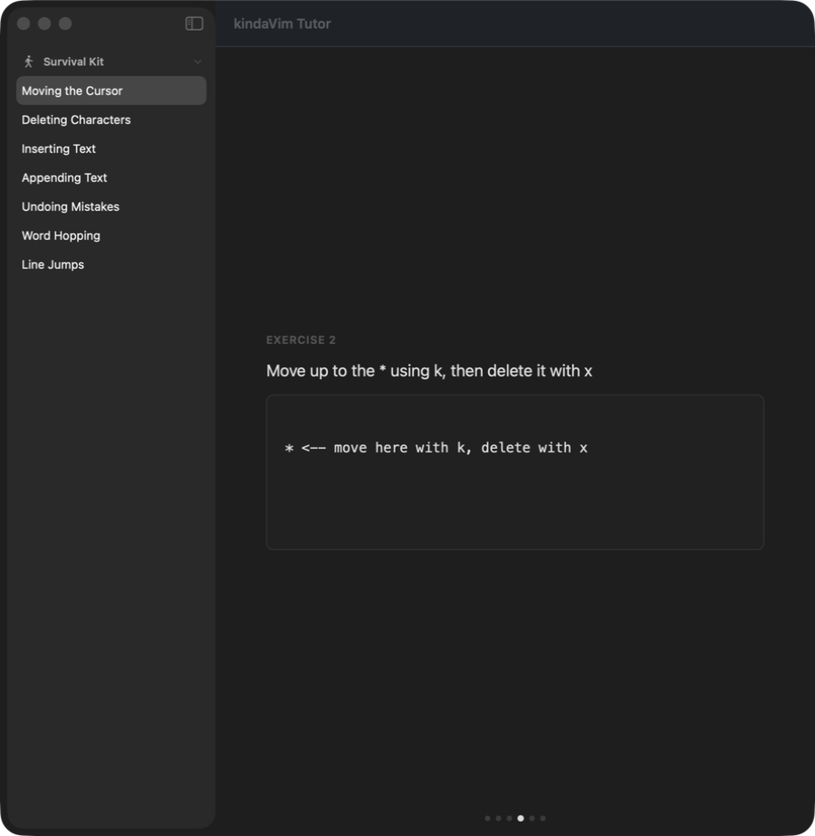
The view owns the engine as @State, starts it on appear, forwards editor callbacks, records the result on completion:
struct DrillStepView: View {
let exercise: Exercise
let exerciseNumber: Int
let progressStore: ProgressStore
@Binding var isEditorFocused: Bool
@State private var engine = ExerciseEngine()
var body: some View {
VStack(alignment: .leading, spacing: 16) {
Text("Exercise \(exerciseNumber)").font(.caption.bold())
Text(exercise.instruction).font(.title3)
if let variation = engine.currentVariation {
ExerciseEditorView(
initialText: variation.initialText,
initialCursorPosition: variation.initialCursorPosition,
onTextChange: { text, cursor in
engine.textDidChange(currentText: text, cursorPosition: cursor)
},
onSelectionChange: { text, cursor in
engine.selectionDidChange(currentText: text, cursorPosition: cursor)
},
onFocusChange: { isEditorFocused = $0 }
)
.id(variation.initialText + "\(variation.initialCursorPosition)")
}
}
.onAppear { engine.start(exercise) }
.onDisappear { engine.stop() }
.onChange(of: engine.isDrillComplete) {
if engine.isDrillComplete {
let result = ExerciseResult(
exerciseId: exercise.id,
completedAt: Date(),
timeSeconds: engine.totalTime,
keystrokeCount: engine.totalKeystrokes,
attempts: engine.drillCount,
hintsUsed: 0
)
progressStore.recordCompletion(result)
}
}
}
}A good test of this kind of split: if you can write a meaningful test for the logic class without importing SwiftUI, the separation is right. If the test needs to build a view, the logic leaked.
ExerciseEngineTests.swift does exactly that: instantiate the engine, feed it fake keystrokes, assert on state. No view, no UI. Pure I/O.
Where we are
The drill view is wired up, but its editor is still a placeholder. The engine's state machine runs correctly in tests. Next, a real editor — which means an unexpected visit to AppKit.
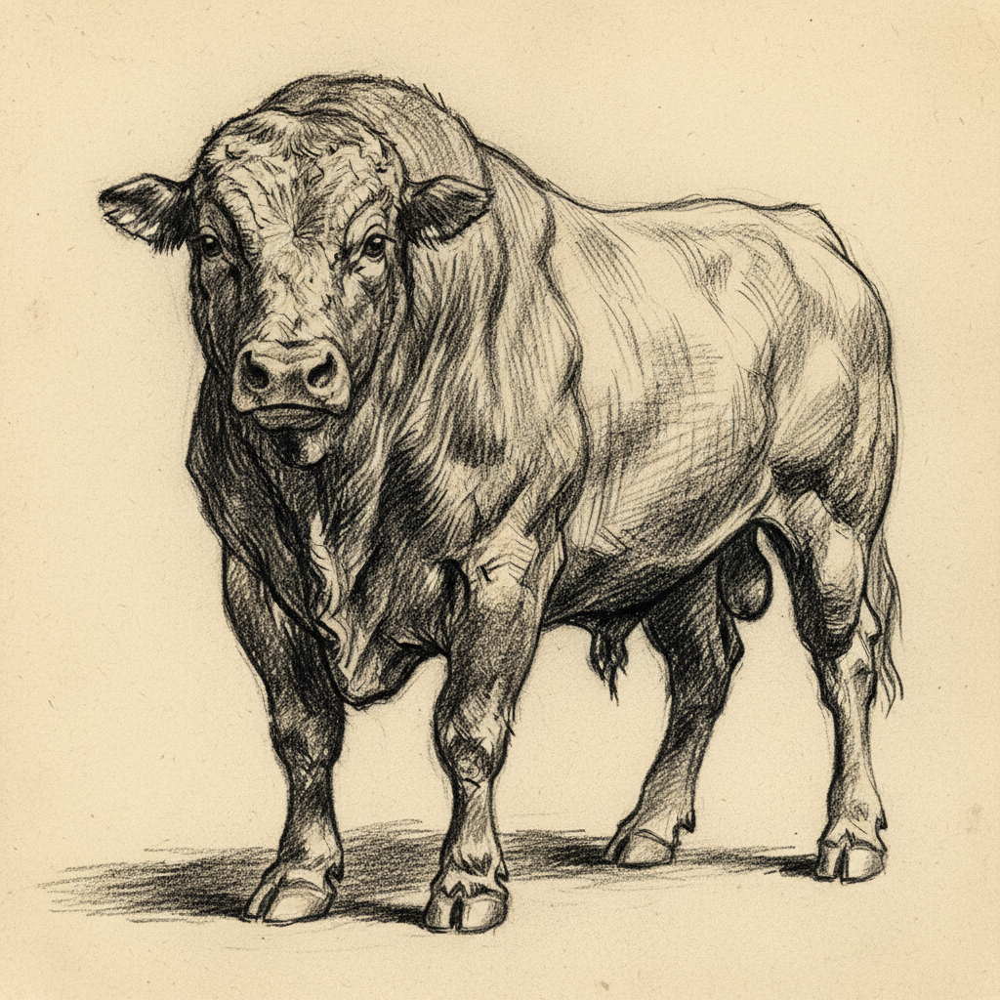
Chapter eight
ExerciseEditorView: a SwiftUI view that wraps NSTextView so kindaVim's system-level interception actually works on it.
SwiftUI alone can't solve this. kindaVim works by hooking the macOS accessibility system and intercepting events on standard text fields — and "standard" means NSTextView, the AppKit control that Mail, Notes, Slack, and Xcode all use. SwiftUI's TextEditor is newer; kindaVim's detection of it isn't reliable. So the drill needs a real NSTextView. Which means NSViewRepresentable.
struct ExerciseEditorView: NSViewRepresentable {
let initialText: String
let initialCursorPosition: Int
var onTextChange: (String, Int) -> Void
var onSelectionChange: (String, Int) -> Void
var onFocusChange: ((Bool) -> Void)?
func makeNSView(context: Context) -> NSScrollView {
let scrollView = NSTextView.scrollableTextView()
guard let textView = scrollView.documentView as? NSTextView else {
return scrollView
}
// Turn off every flavor of auto-correct so kindaVim motions
// produce exactly the keystrokes the engine expects.
textView.isRichText = false
textView.isAutomaticQuoteSubstitutionEnabled = false
textView.isAutomaticDashSubstitutionEnabled = false
textView.isAutomaticTextReplacementEnabled = false
textView.isAutomaticSpellingCorrectionEnabled = false
textView.isContinuousSpellCheckingEnabled = false
textView.isAutomaticTextCompletionEnabled = false
textView.font = Typography.editorFont
textView.string = initialText
let safePosition = min(initialCursorPosition, textView.string.count)
textView.setSelectedRange(NSRange(location: safePosition, length: 0))
textView.delegate = context.coordinator
context.coordinator.textView = textView
context.coordinator.onFocusChange = onFocusChange
return scrollView
}
func updateNSView(_ scrollView: NSScrollView, context: Context) {
guard let textView = scrollView.documentView as? NSTextView else { return }
if context.coordinator.currentInitialText != initialText {
context.coordinator.currentInitialText = initialText
context.coordinator.isResetting = true
textView.string = initialText
let safePosition = min(initialCursorPosition, textView.string.count)
textView.setSelectedRange(NSRange(location: safePosition, length: 0))
context.coordinator.isResetting = false
}
}
func makeCoordinator() -> Coordinator {
Coordinator(
onTextChange: onTextChange,
onSelectionChange: onSelectionChange,
initialText: initialText
)
}
}Most of makeNSView is ceremony — flipping off every auto-correct flavor so kindaVim's keystrokes land exactly as the engine expects. updateNSView is the subtle one: SwiftUI can call it for any reason, and you have to decide what that means. Here, we only reset the buffer if the seed text changed (new rep). Otherwise the user's in-progress edits stay.
@MainActor
final class Coordinator: NSObject, NSTextViewDelegate {
var onTextChange: (String, Int) -> Void
var onSelectionChange: (String, Int) -> Void
var onFocusChange: ((Bool) -> Void)?
var currentInitialText: String
var isResetting = false
weak var textView: NSTextView?
init(onTextChange: @escaping (String, Int) -> Void,
onSelectionChange: @escaping (String, Int) -> Void,
initialText: String) {
self.onTextChange = onTextChange
self.onSelectionChange = onSelectionChange
self.currentInitialText = initialText
}
func textDidChange(_ notification: Notification) {
guard !isResetting, let textView = notification.object as? NSTextView else { return }
onTextChange(textView.string, textView.selectedRange().location)
}
func textViewDidChangeSelection(_ notification: Notification) {
guard !isResetting, let textView = notification.object as? NSTextView else { return }
onSelectionChange(textView.string, textView.selectedRange().location)
}
nonisolated func textDidBeginEditing(_ notification: Notification) {
MainActor.assumeIsolated { onFocusChange?(true) }
}
nonisolated func textDidEndEditing(_ notification: Notification) {
MainActor.assumeIsolated { onFocusChange?(false) }
}
}The full chain: user types → NSTextView notifies delegate → coordinator calls the SwiftUI-supplied closure → closure calls engine.textDidChange → engine mutates observable state → every view reading that state re-renders. Four layers, no glue code you had to invent.
Where we are
The drill is functional end-to-end. Pick a lesson, press l through the slides, hit the drill, type with kindaVim active, watch the rep complete, watch the drill advance. There's just one thing missing: the app forgets everything when you close it.
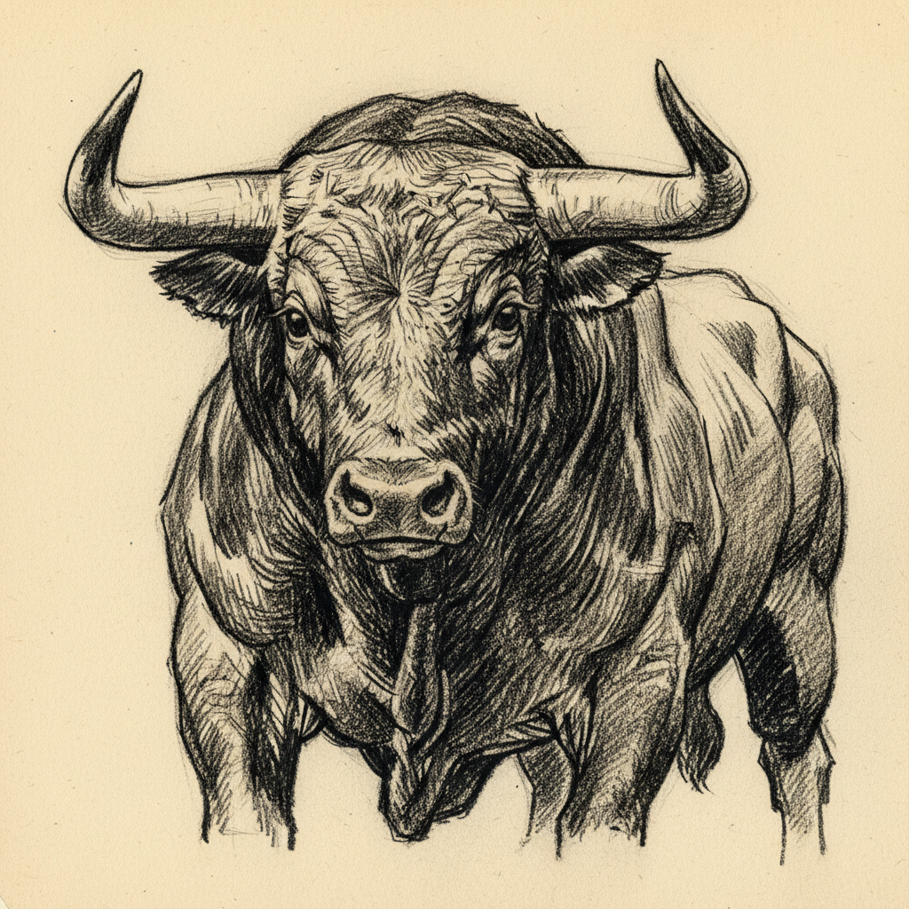
Chapter nine
ProgressStore: a tiny observable class that reads user progress on startup, writes on every completed drill, and answers aggregate questions for the sidebar.
You don't need a database. A stable directory, a Codable type, and an atomic write is the whole recipe.
The directory is ~/Library/Application Support/<your-app-name>/, found via FileManager — create it on first launch before writing. Codable is whatever model you're persisting (here, UserProgress). Atomic means the file is written to a temp location and renamed, so a crash mid-write can't corrupt what's already there.
@Observable
@MainActor
public final class ProgressStore {
public private(set) var progress: UserProgress
private let fileURL: URL
public init() {
let base = FileManager.default
.urls(for: .applicationSupportDirectory, in: .userDomainMask)
.first!
self.fileURL = base
.appendingPathComponent("kindaVimTutor", isDirectory: true)
.appendingPathComponent("progress.json")
if let data = try? Data(contentsOf: fileURL),
let saved = try? JSONDecoder().decode(UserProgress.self, from: data) {
self.progress = saved
} else {
self.progress = UserProgress()
}
}
public func recordCompletion(_ result: ExerciseResult) {
if let existing = progress.completedExercises[result.exerciseId] {
// Keep the best result: fewest keystrokes, then fastest time.
if result.keystrokeCount < existing.keystrokeCount
|| (result.keystrokeCount == existing.keystrokeCount
&& result.timeSeconds < existing.timeSeconds) {
progress.completedExercises[result.exerciseId] = result
}
} else {
progress.completedExercises[result.exerciseId] = result
}
progress.totalTimeSpent += result.timeSeconds
progress.lastPracticeDate = Date()
save()
}
public func isExerciseCompleted(_ id: String) -> Bool {
progress.completedExercises[id] != nil
}
public func isLessonCompleted(_ lesson: Lesson) -> Bool {
lesson.exercises.allSatisfy { isExerciseCompleted($0.id) }
}
private func save() {
let dir = fileURL.deletingLastPathComponent()
try? FileManager.default.createDirectory(at: dir, withIntermediateDirectories: true)
if let data = try? JSONEncoder().encode(progress) {
try? data.write(to: fileURL, options: .atomic)
}
}
}progress is private(set) — callers read the whole state but only mutate through recordCompletion. That's the difference between a store and a dictionary. And the "keep the best result" rule lives in the store, not in views — centralize the policy and you get one answer to "which result does the app remember?"
One final keystroke of one final rep of a drill, at a glance:
Solid arrows are explicit calls; the dashed arrow is the Observation framework noticing ProgressStore changed and re-running the sidebar's body. You wrote none of that last step. The sidebar just reads isLessonCompleted, the compiler subscribes it to what it read, and SwiftUI handles the rest. That's the promise of the declarative model — and it holds.
$ swift build
Build complete!
$ swift run
# Window opens. Pick "Moving the Cursor".
# Press l through the slides. Hit the drill.
# Type. The rep completes. The drill completes.
# Close the app. Open it again. The checkmark is still there.Where we are
Done. Nine chapters, about a thousand lines of Swift, and an app that does something real — teaches a skill, remembers what you've done, feels at home on the Mac.
The five principles that carried this app are the same five you'll reach for in every Mac app you write after this one:
Data first. State lifted out of views. Business logic in its own class. AppKit bridged only where it earns its keep. Persistence that fits the data.
Some concrete things to try from here:
master branch. The progress inspector, distributed-notification mode detection, achievement rings, and the drill-event recorder are all built on the primitives you just wrote. The diff is the reference for "what does a second feature look like?"ProgressStore's JSON for SwiftData. Replace ExerciseEditorView with a custom NSTextView subclass that draws the cursor differently. Rewrite ExerciseEngine in an actor instead of @MainActor. Each is a focused exercise with visible consequences.If you built something from this, or read something that changed how you'd shape your own SwiftUI app, I'd genuinely love to hear about it. The repo is on GitHub; issues and pull requests are open.
The shape of this app, at a glance. Come back when you've forgotten which annotation does what.
@Binding to it.NSViewRepresentable is a cost. Pay it for real capabilities, not for novelty.@mainMarks the struct that hosts the app's entry point.@StateThis view owns this value. SwiftUI keeps it alive across body re-runs.@BindingA read-write handle to state someone else owns.@ObservableMakes a class auto-trackable by SwiftUI (Swift 5.9+).@MainActorGuarantees the code runs on the main thread. Required for UI.@ViewBuilderLets a function's branches return different view types.@PreviewableUse @State-ish properties inside a #Preview.@escapingClosure parameter that may outlive the call.SendableSafe to pass across threads. Free on value types with value fields.IdentifiableHas a stable id. Powers List and ForEach identity.HashableUsable as a Set element or navigation selection.CodableCan encode and decode itself — JSON, plists, etc.NSViewRepresentableWraps an AppKit NSView for use in SwiftUI.NavigationSplitViewThe macOS two-pane container — sidebar + detail.